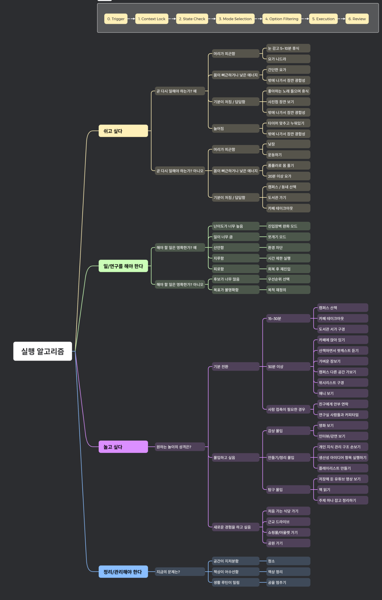

All-in-one control panel
Dashboard
DB 확인 중
Local only
All-in-one control panel
Intake에서 받고, Queue에서 상태 관리하고, Daily Execution에서 오늘 할 일을 구성.
스케줄링이 아니라 항목 관리 중심. 실제 time blocking은 종이 다이어리에서 수행.
연구 관련 공부. 주간 시간 목표를 명시하고 추적.
컴공, 코딩, 선형대수, 양자역학처럼 부담 없이 쌓아두는 영역.
매달 새 DB를 만들지 않는 캘린더형 체크 시스템.
새 습관 추가와 습관별 요일 커스터마이징.
현재는 원본 PNG를 그대로 기준 이미지로 둠. 인터랙티브 편집 UI는 다음 단계에서 별도 설계.
